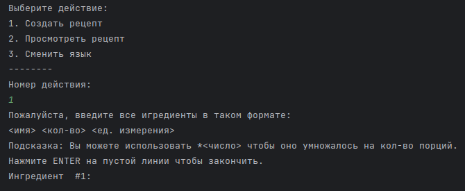
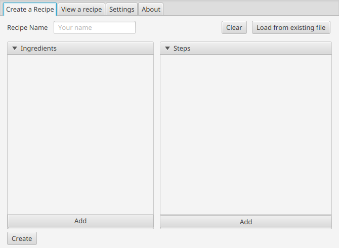

Welcome to Recipe Helper!
Recipe Helper (also known as RecipeViewer) is a simple app to help you create or follow someone's recipe. You can multiply your recipe ingredients easily.
3 programs - 1 format
Recipe Helper has 3 versions: The command line version (the first
one,
written in Java), the GUI version (in Java too), and this web version.


All of them support one format - JSON.
The recipe file looks something like this:
{
"ingredients": [
{
"name": "test",
"count": "1",
"count2": "thing"
}
],
"steps": [
{
"step1": "test"
}
]
}
Not an actual recipe.
Open-source
The source code of this program and all of its versions is publicly available at
GitHub.
GitHub is a free platform for sharing open-source projects.
It has a built-in issue tracker to fix the issues more easily.